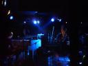

RE:JAZZ jammt den Cotton Club
Barfuß über die Nordsee tanzen und Jazz vom feinsten bekommen – das geht nur in KL! Am Samstag gastierte RE:JAZZ im Rahmen des International Jazzfestival im Cotton Club und jammte bei freiem Eintritt(!). Die stellenweise etwas verkrampft wirkende Stimmung löste sich schnell in überzeugenden Jazz mit klassen Soli, wie auch interessante Neuinterpretationen u.a. von Air oder Mo’ Horizons auf. Top!
http://www.re-jazz.de